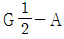
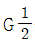
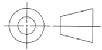
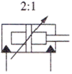
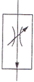
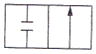
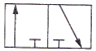
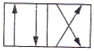
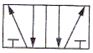

설비보전기능사 (2013-10-12 기출문제)
1과목: 기계보전 일반(대략구분)
1. 공기 중에는 액체상태를 유지하고 공기가 차단되면 중합이 촉진되어 경화되는 접착제로 진동이 있는 차량, 항공기, 동력기 등의 풀림을 막거나 가스, 액체의 누설을 막기 위해 사용하는 접착제는?
- 액상 가스킷
- 유화액형 접착제
- 혐기성 접착제
- 모노머형 접착제
(정답률: 63%)

2. TPM(Total Productive Maintenance)의 5가지 기본 활동이 아닌 것은?
- 자주보전 체제구축
- 계획보전 체제의 확립
- 설비의 효율화를 위한 개선활동
- PM 설계와 초기 유동관리 체제 확립
(정답률: 66%)
3. 다음 중 회전체나 회전축의 흔들림 점검, 공작물의 평행도 및 평면상태의 측정에 사용하는 공구는?
- 필러게이지
- 다이얼게이지
- 피치게이지
- 마이크로미터
(정답률: 78%)
4. 단면도의 해칭 방법에 관한 설명으로 옳은 것은?
- 해칭을 하는 부분 속에는 문자나 기호 등을 삽입할 수 없다.
- 기본 중심선에 대하여 굵은 실선으로 같은 간격의 평행선으로 그린다.
- 서로 인접하는 다른 단면의 해칭은 해칭선을 동일한 각도로 한다.
- 동일한 부품의 단면은 떨어져 있어도 해칭의 각도와 간격을 같게 한다.
(정답률: 60%)
5. 원심식 압축기의 장점으로 옳지 않은 것은?
- 윤활이 쉽다.
- 맥동압력이 없다.
- 고압발생이 가능하다.
- 설치면적이 비교적 좁다.
(정답률: 78%)
6. 윤활의 목적으로 옳지 않은 것은?
- 금속 간 접촉에 의한 마모 방지
- 이물질 침입을 막고 녹과 부식 방지
- 냉각작용으로 윤활유 자신의 열화 방지
- 금속표면에 접촉하여 금속의 산화현상 촉진
(정답률: 86%)
7. 기어 손상의 분류 중 피칭과 관련이 있는 것은?
- 마모
- 용착
- 소성항복
- 표면피로
(정답률: 63%)
8. 볼트, 너트의 죔 토크를 구하는 식으로 옳은 것은?(단, l은 힘이 작용하는 점까지의 길이, F는 힘이다.)
- lF
- l2F
- l/F
- F/l
(정답률: 74%)
9. 나사의 제도법에 관한 설명으로 옳지 않은 것은?
- 수나사와 암나사의 결합부분은 주로 암나사로 표시한다.
- 수나사와 골지름을 표시하는 선은 가는 실선으로 한다.
- 수나사의 바깥지름을 표시하는 선을 굵은 실선으로 한다.
- 수나사와 암나사의 측면 도시에서는 골지름은 가는 실선으로 한다.
(정답률: 67%)
10. 윤활유와 비교할 때 그리스 윤활의 장점으로 옳지 않은 것은?
- 누설이 적다.
- 급유간격이 길다.
- 냉각작용이 우수하다.
- 밀봉성이 좋고 먼지 등의 침입이 적다.
(정답률: 70%)
11. 3상 유도 전동기의 과열원인으로 옳지 않은 것은?
- 냉각팬의 절손
- 과부하 상태로 운전
- 3상 중 1상의 퓨즈가 융단된 상태로 운전
- 배선용 차단기(NFB)의 동작으로 인한 전원 차단
(정답률: 80%)
12.

로 표기된 나사가 의미하는 것은?- 관용 평행 수나사

A급 - 관용 평행 암나사
 A급
A급 - 관용 테이퍼 수나사
 A급
A급 - 관용 테이퍼 암나사
 A급
A급
(정답률: 65%)
13. 기계장치에 사용하는 실(Seal) 중 많이 사용하는 오링(O-ring)의 장점이 아닌 것은?
- 가격이 저렴하다.
- 설계, 가공 및 조립이 쉽다.
- 사용 유체에 다른 재질의 종류가 단순하다.
- 규격이 다양하여 원하는 치수로 설계가 가능하다.
(정답률: 59%)
14. 파이프의 도시 방법에서 유체의 종류 중 공기를 뜻하는기호는?
- A
- G
- O
- S
(정답률: 92%)
15. 윤활제의 급유 방법 중 순환급유법에 해당하지 않는 것은?
- 비말 급유법
- 적하 급유법
- 원심 급유법
- 유륜식 급유법
(정답률: 79%)
16. 다음 중 관 이음방법의 종류가 아닌 것은?
- 나사이음
- 올덤이음
- 용접이음
- 플랜지이음
(정답률: 75%)
17. 예방정비(Preventive Maintenance)에 관한 내용으로 가장 적절한 것은?
- 고장, 정지 또는 유해한 성능저하를 가져온 후에 수리를 행하는 것
- 고장이 없고 정비가 필요하지 않은 설비를 설계, 제작 또는 구입하는 것
- 고장, 정지 또는 성능저하를 가져오는 상태를 조기에 발견하고 초기에 이러한 상태를 제거 또는 복귀시키기위한 보전
- 고장난 설비의 수리 시 단순히 원상태로 수리하는 것이아니라 설비의 약점을 파악하여 고장이 일어나지 않도록개량하거나 설비의 질을 개선하는 것
(정답률: 65%)
18. 원심 펌프를 사용하여 양정을 높이고자 할 때 다음 중 가장 적절한 방법은?
- 다단 펌프를 사용한다.
- 토출 배관을 길게 한다.
- 흡입 배관을 길게 한다.
- 양 흡입 펌프를 사용한다.
(정답률: 52%)
19. 송풍기의 점검사항 중 운전 중 점검사항에 해당하는 것은?
- 베어링의 진동
- 케이싱의 이상 진동
- 각부 볼트의 조임 상태
- 댐퍼 및 베인 컨트롤 장치의 개폐 조작
(정답률: 51%)
20. 다음 그린 기호가 표시하는 것은?

- 제1각법
- 정투상법
- 제3각법
- 등각투상법
(정답률: 82%)
2과목: 설비관리(대략구분)
21. 기어 펌프에 관한 설명으로 옳은 것은?
- 기어가 회전할 때 기포가 발생하지만 유압펌프로도 사용할 수 있다.
- 유압펌프로 사용 시 효율은 낮으나 소음과 진동이 거의 발생하지 않는다.
- 회전수 1,500rpm 정도의 윤활유 펌프에 많이 이용되고있으며, 점성이 큰 액체에서는 회전수를 크게 한다.
- 원통형의 케이싱 내에 편심된 회전체가 회전하고 이 회전체에 홈이 있어 홈 속에 판 모양의 베인이 삽입된구조이다.
(정답률: 45%)
22. 글루브 밸브에 관한 설명으로 옳지 않은 것은?
- 개폐가 빠르다.
- 압력강하가 작다.
- 구조가 간단하다.
- 유체 저항이 크다.
(정답률: 61%)
23. 유성기어 감속기에 관한 설명으로 옳지 않은 것은?
- 큰 감소비를 얻을 수 있다.
- 감속기 기어의 이수차이가 있다.
- 입형은 펌프를 이용하여 윤활한다.
- 1kW 이하의 소형은 유욕 윤활을 한다.
(정답률: 77%)
24. 유체의 흐름을 한 방향으로만 흐르게 하기 위한 밸브는?
- 스톱밸브
- 체크밸브
- 안전밸브
- 격막밸브
(정답률: 89%)
25. 설비계획단계에서의 생산성 측정의 척도로 맞는 것은?
- 투자효율
- 보전효율
- 제품단위당 보전비
- 제품단위당 투자비
(정답률: 42%)
26. 설비관리를 수행할 대 기능적으로 구분하면 일반관리 기능, 기술기능, 실행기능 및 지원기능으로 구분할 수있다. 이때, 일반관리기능에 해당되지 않는 것은?
- 보전 정책결정
- 공급망 관리
- 보전업무의 계획, 일정계획 및 통제
- 설비성능분석
(정답률: 50%)
27. 고장유형의 치명도 분류에서 MIL-STD-1629A 표준은 고장영향도와 심각도를 4가지로 분류하는데 틀린 것은?
- 파국적(Catastrophic) 고장
- 한계(Marginal) 고장
- 치명적(Critical) 고장
- 가끔(Occasional) 고장
(정답률: 73%)
28. TPM 전개상 중요한 5가지 활동과 그 세부내용이 잘못된것은?
- 설비의 효율화를 위한 개선 활동 : 6대 로스(Loss)의 근절
- 작업자의 자주보전체계 확립 : 수시로 수리할 수 있도록공구배치 효율화 추진
- 계획보전의 체계 확립 : 보전부분이 효율적 활동을 할 수 있도록 체계를 확립
- 기능 교육의 확립 : 작업자의 기능수준 향상 도모
(정답률: 55%)
29. 치공구의 설계 시 고려할 사항으로 거리가 먼 것은?
- 운전ㆍ취급이 쉬어야 한다.
- 부착과 해체가 어렵더라도 정밀하면서 세밀한 설계가 이루어져야 한다.
- 지그와 고정구 구성부품의 표준화를 고려해야 한다.
- 절삭에 의해서 생긴 칩을 제거하기 쉬운 구조로 해야한다.
(정답률: 80%)
30. 보전성 공학의 기능에서 보전도 프로그램 준비, 사용자와의 정보연락 등과 같은 기능을 담당하는 것을 무엇이라 하는가?
- 보전도 계획
- 보전도 분석
- 보전도 설계
- 보전도 합리화
(정답률: 78%)
3과목: 공유압 일반(대략구분)
31. 품질보전이 설비문제와 밀접한 관계를 갖고 있는 이유 중틀린 것은?
- 제조현장의 자동화, 설비고도화 및 성력화 등으로의 변화
- 설비의 상태에 따라 제품의 품질이 확보되는 시대의 도래
- 설비의 설정조건 변동이 용이하며, 자기진단 기능을 요구
- 생산공정 중에 발생하는 공정불량의 최소화의 중요성 대두
(정답률: 61%)
32. 설비관리의 변천에서 공장을 중심으로 한 생산현장개선의 수단으로 설비관리를 보전도(Maintainability) 중심으로 하는 설비관리는?
- 예방보전
- 종합생산보전(TPM)
- 생산보전
- 종합생산성관리
(정답률: 43%)
33. 문제 해결의 단계별 전개방법에서 목표 설정 시 이용되는 QC기법이 아닌 것은?
- 레이더 차트법
- 막대 그리프법
- 특성 요인도법
- 히스토그램법
(정답률: 50%)
34. 가공 및 조립형 설비의 6대 로스에 대한 정의로 틀린 것은?
- 고장 로스는 돌발적 또는 만성적으로 발생하는 고장에 의하여 발생되는 시간로스이다.
- 속도저하로스는 설계에 의한 이론 사이클 시간과 실제 사이클 시간과의 차이이다.
- 순간정지로스 공정 중에 발생하는 불량품에 의한 불량로스이다.
- 준비조정로스는 품종교체, 공구교환에 의한 시간적 로스이다.
(정답률: 57%)
35. 자주보전의 전개단계가 바르게 된 것은?
- 초기청소 → 발생원인ㆍ곤란개소 대책 → 청소ㆍ급유기준 작성과 실시 → 자주점검 → 총점검
- 초기청소 → 발생원인ㆍ곤란개소 대책 → 청소ㆍ급유기준 작성과 실시 → 총점검 → 자주점검
- 청소ㆍ급유기준 작성과 실시 → 초기청소 → 발생원인ㆍ곤란개소 대책 → 자주점검 → 총점검
- 청소ㆍ급유기준 작성과 실시 → 초기청소 → 발생ㆍ원인곤란개소 대책 → 총점검 → 자주점검
(정답률: 64%)
36. 장치공업에 있어서의 계장의 특징으로 맞는 것은?
- 자동화를 고려하기 어렵다.
- 정밀도가 극히 높고, 구조는 섬세한 지시형, 기반형(Portable) 계측기가 사용된다.
- 제품이 연속해서 정상적으로 만들어지기 때문에 장치식, 자동지시식, 기록식 계측기가 주로 사용된다.
- 측정해야 할 변수의 종류가 적고, 상호 관련성이 적기때문에 간단하고 정밀도가 낮은 계측기가 사용된다.
(정답률: 43%)
37. 설비종합효율을 구하는 식은?
- 설비종합효율 = 성능가동률 × 양품률
- 설비종합효율 = 시간가동률 × 성능가동률
- 설비종합효율 = 시간가동률 × 성능가동률 × 양품률
- 설비종합효율 = 속도가동률 × 성능가동률 × 양품률
(정답률: 78%)
38. 배열 회수에 있어 고려해야 할 점을 설명한 것 중 틀린 것은?
- 각 열 설비마다에 배열의 양 및 질을 파악하고, 배열하는 방법들의 기술적 가능성 및 경제적 방법을 검토한다.
- 회수에 필요한 비용, 회수열의 품질, 작업조건, 노무조건등을 비교 검토하여, 가장 이용 가치가 있는 방법을 선택한다.
- 배열 이용의 방법을 관련 설비,전 공장 또는 공장 밖에 토지로 확대하여 고려하는 것도 필요하다.
- 열 사용의 효율이 높은 설비나 열 수송 중에 새어 나오는 열은 회수할 수 있도록 조치한다.
(정답률: 44%)
39. 예방보전의 효과를 설명한 것 중 거리가 먼 것은?
- 설비의 정확한 상태 파악
- 대수리 감소
- 고장 원인의 정확한 파악
- 예비품 재고량의 증가
(정답률: 80%)
40. 유압모터에 비해 공기압 모터의 특징으로 잘못된 것은?
- 부하에 의한 회전수 변동이 크다.
- 배기소음이 적다.
- 에너지 변환효율이 낮다.
- 가격이 저렴한 제어 밸브단으로 회전수,토크를 자유롭게 조절할 수 있다.
(정답률: 49%)
41. 유압장치는 작은 힘으로 큰 힘을 낼 수 있는 장치이다. 이를 설명할 수 있는 원리는 어느 것인가?
- 연속의 법칙
- 베르누이 원리
- 레이놀즈 수
- 파스칼의 원리
(정답률: 77%)
42. 다음 도면 기호의 명칭은 무엇인가?

- 단동 실린더(스프링붙이)
- 양 로드형 복동 실린더
- 복동 텔레스코프형 실린더
- 복동 실린더(쿠션붙이)
(정답률: 47%)
43. 기어 펌프에 대한 설명이다. 틀린 것은?
- 기름의 오염에 비교적 강하다.
- 가변용량형으로 만들기가 쉽다.
- 내접기어 펌프와 외접기어 펌프가 있다.
- 폐입현상에 대한 대책이 필요하다.
(정답률: 49%)
44. 카운터 밸런스 회로를 설명한 것 중 맞는 것은?
- 실린더 입구측의 불필요한 압유를 배출시켜 작동 효율을 증진시킨 회로
- 펌프 용량을 변화시켜 실린더의 속도를 제어하는 회로
- 피스톤의 수압 면적 차에 의하여 피스톤을 전진시키는회로
- 일정한 배압을 만들어 중력에 의한 자연 낙하를 방지하는 회로
(정답률: 52%)
45. 포핏(Poppet)식 공압 방향제어밸브의 장점은?
- 밸브의 이동거리가 길다.
- 밸브시트는 탄성이 있는 실(seal)에 의해 밀봉되어 공기누설이 잘 안 된다.
- 다방향 밸브로 되어도 구조가 간단하다.
- 공급압력이 밸브에 작동하지 않기 때문에 큰 변형 조작이 필요없다.
(정답률: 56%)
46. 램형 실린더를 작동형식에 따라 분류하였을 때 어디에 속하는가?
- 단동 실린더
- 복동 실린더
- 차동 실린더
- 다단 실린더
(정답률: 45%)
47. 유압유의 첨가제 중 거품성 기포의 발생억제 및 기포의 분리가 잘 되도록 하는 것은?
- 점도지수 향상제
- 유동점 강하제
- 내마모제
- 소포제
(정답률: 72%)
48. 유압 장치의 이음 중에서 동관이음 시 많이 사용하며 분해 및 조립 시 용이한 배관 이음방식은?
- 플레어 이음
- 슬리브 이음
- 나사 이음
- 용접 이음
(정답률: 50%)
49. 흡수식 에어드라이어(공기건조기)의 특징이 아닌 것은?
- 취급이 복잡하다.
- 장비의 설치가 간단하다.
- 기계적 마모가 적다.
- 외부 에너지 공급이 필요 없다.
(정답률: 58%)
50. 다음 기호는 유량조절 밸브이다. 이 밸브에 대한 설명으로 옳은 것은?

- 니들 밸브와 유량조절 밸브를 조합하여 유량을 자유롭게흐르게 하는 밸브이다.
- 압력 조절밸브와 온도의 변화에 대응하기 위한 밸브이다.
- 온도의 변화에 관계없이 관로 내에 설정된 값을 유지하는 밸브이다.
- 압력 보상 밸브를 내부에 설치하여 부하의 변동에 관계없이 유량을 일정하게 하는 밸브이다.
(정답률: 54%)
4과목: 산업안전(대략구분)
51. 공기발생장치에서 공기탱크의 역할이 아닌 것은?
- 공기압력이 맥동을 흡수한다.
- 압력이 급격히 떨어지는 것을 방지한다.
- 압축공기를 통하여 윤활유를 공급한다.
- 압축공기를 저장한다.
(정답률: 69%)
52. 3포트 2위치 변환 밸브를 나타내는 것은?




(정답률: 72%)
53. 다음 중 유압회로도의 종류가 아닌 것은?
- 단면 회로도
- 총식 회로도
- 기호 회로도
- 상세 회로도
(정답률: 36%)
54. 다음 중 크레인의 안전장치에 속하지 않는 것은?
- 백레스트
- 권과방지장치
- 비상정지장치
- 과부하방지장치
(정답률: 64%)
55. 일반적으로 공장화재의 주원인이라고 볼 수 없는 것은?
- 전기배선의 노후
- 위험물의 취급 부주의
- 소방설비의 부족
- 위험물의 부적합한 보관
(정답률: 79%)
56. 안전사고 발생의 가장 큰 원인은?
- 천재지변
- 불안전한 행동
- 시설의 결함
- 불안전한 조건
(정답률: 78%)
57. 누전차단기의 사용목적이 아닌 것은?
- 단선 방지
- 감전으로부터 보호
- 누전으로 인한 화재 예방
- 전기설비 및 전기 기기의 보호
(정답률: 68%)
58. 다음 중 산업안전보건법에서 규정하고 있는 안전ㆍ보건표지의 종류에 해당되지 않는 것은?
- 금지표시
- 경고표지
- 지시표지
- 위험표지
(정답률: 41%)
59. 가연성 액체나 고체의 표면에 순간적으로 화염을 접근시킬 경우, 연소시키는데 필요한 만큼의 증기를 발생하는 최저 온도를 무엇이라고 하는가?
- 발화점
- 폭발점
- 연소점
- 인화점
(정답률: 50%)
60. 다음 중 장갑을 착용하고 작업해도 좋은 작업은?
- 선반작업
- 밀링작업
- 용접작업
- 드릴작업
(정답률: 85%)